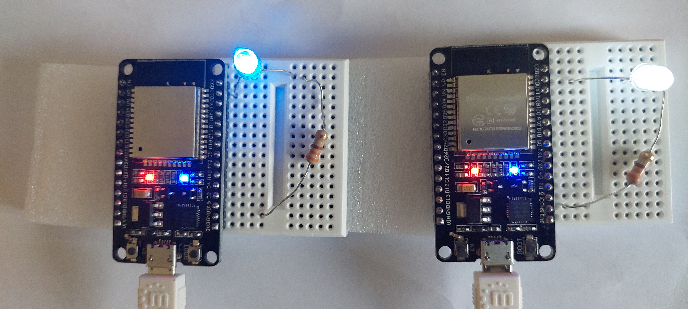
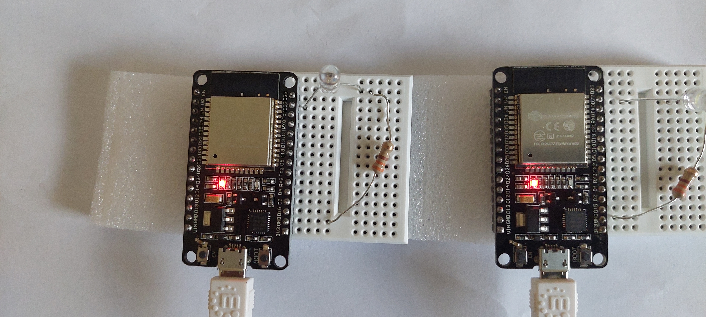
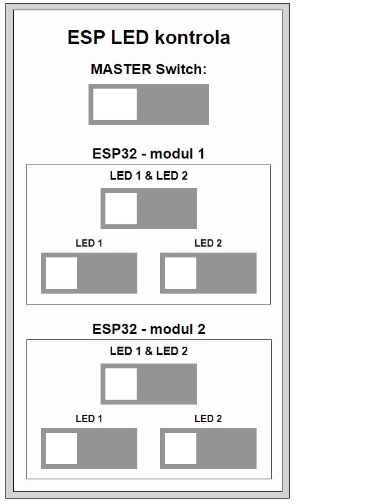

Nosilec predmeta: red. prof. dr. Andrej Škraba
Avtor: Domen Pernar
1. naloga a)
Za opravljanje naloge sem potreboval dva ESP32 modula, vsak z že vgrajeno eno LED diodo, in dve dodatni LED diodi povezani na ploščici. Odvisno od stanja pina se LED dioda prižge ali ugasne.
Za uporabniški vmesnik sem omogočil prižiganje in ugašanje LED diod posamezno, po dve ali pa vse štiri.
Za povezavo med klientom iz Ubuntu Linux strežnika in modulom sem uporabil povezavi na portu dveh v kodi definiranih portih. Povezava je bila vzpostavljena po principu web vtičnika.
  1. naloga b)
V aplikacijo Arduino IDE sem vnesel kodo. Ustrezno sem povezal pine na ploščico z LED diodo in uporom. Prek povezave z UBS kablom sem prenesel kodo na Arduino.
Na spodnjem videu je prikaz delovanja Arduina.
2. naloga
1. del
Upošteval sem navodila vaj in za izvedbo priključil potenciometer in upornik na ploščico. Z vodniki sem nato povezal ploščico in ESP 32.
Glede na vrtenje potenciometra se spreminja njegova upornost, kar je jasno razvidno tudi iz grafa v realnem času.
Tudi pri tej nalogi je potekala povezava na principu vtičnika, da je bila sploh možna izvedba. Izvedba komunikacije in izmenjave podatkov je bila na podlagi JSON.
2. naloga
2. del
Drugi del naloge je vseboval podobno kodo za izvedbo in pravilno delovanje. Namesto potenciometra sem vtem primeru na ploščico priključil fotoupor in upornik.
Glede na intenziteto svetlobe na fotouporu, se je tudi njegova upornost spreminjala. Ta sprememba se je tudi odčitala na grafu.